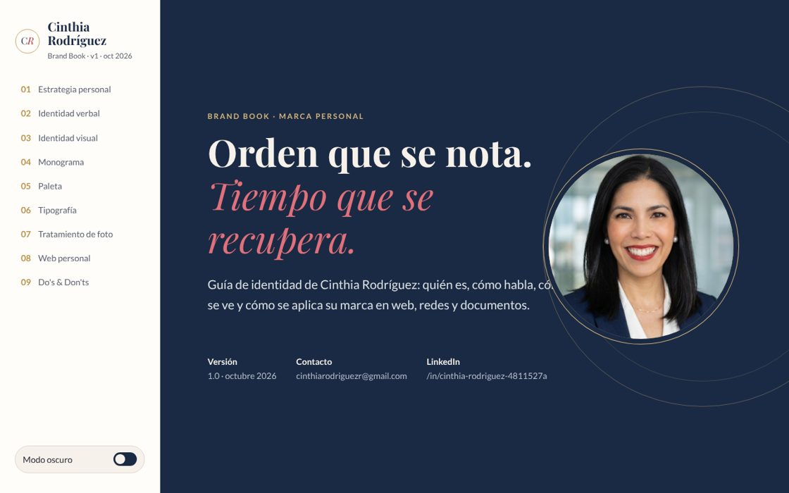
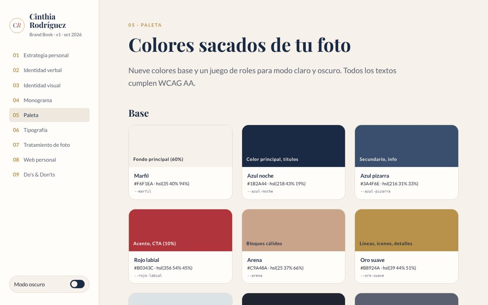

«Cada hora que me ahorra el orden es una hora más con mi familia.»
Gestión documental
Valido, registro y archivo para que todo sea trazable y se encuentre a la primera.
Ver en el mapa profesional →Llevo más de 15 años poniendo orden en proyectos, documentos y datos. Ahora le sumo la IA: preparo lo pesado con ella y dedico mi tiempo a lo que importa, revisar y decidir.
He trabajado en dos países y en sectores muy distintos. Lo que une cada etapa es lo mismo: que la información esté en su sitio y que el trabajo fluya.
«Dejé de satanizar la IA y la hice mi aliada. No para que trabaje por mí, sino para preparar lo pesado y dejarme lo que importa: revisar y decidir.»
Cada habilidad enlaza con un proyecto de este portafolio donde puedes verla en acción.
Valido, registro y archivo para que todo sea trazable y se encuentre a la primera.
Ver en el mapa profesional →Convierto información dispersa en tablas y gráficos que se entienden de un vistazo.
Ver el dashboard →Previsto, pagado y pendiente, con alertas antes de que algo se desvíe.
Ver el tablero de gastos →Reparto tareas, fijo responsables y hago que la información llegue a quien la necesita.
Ver mi equipo de bots →Uso ChatGPT, Claude, Gemini y Grok para preparar borradores, ordenar datos y automatizar tareas, y reviso cada resultado.
Ver cómo la uso →Textos claros y materiales con una imagen coherente, del correo al documento.
Ver mi brand book →Todos los he creado yo, con ayuda de la IA y revisando cada dato. Cada uno resuelve un problema real.
Demuestra: organizar datos y presentarlos de forma visual.
Abrir el dashboard →Demuestra: ordenar información para comunicarla, y gestionar documentación bajo presión.
Demuestra: delegar con instrucciones precisas, fijar controles de calidad y documentar un proceso.
Demuestra: seguimiento de pagos y control de presupuestos, la misma lógica que en un departamento administrativo.


Demuestra: crear normas y plantillas, y aplicarlas con coherencia.
Demuestra: planificar, mantener un calendario y comunicar con claridad.
Ver mi LinkedIn →Comparto lo que aprendo con la IA aplicada a la administración. Sin tecnicismos y con casos reales.
Gestión documental y pequeños sistemas que evitan buscar, repetir y corregir.
Cómo uso la IA en tareas administrativas reales, con lo que funciona y lo que no.
Lo que aprendo por el camino, mientras estudio, trabajo y concilio.
«Cada hora que me ahorra el orden es una hora más con mi familia.»
Parte teórica finalizada.